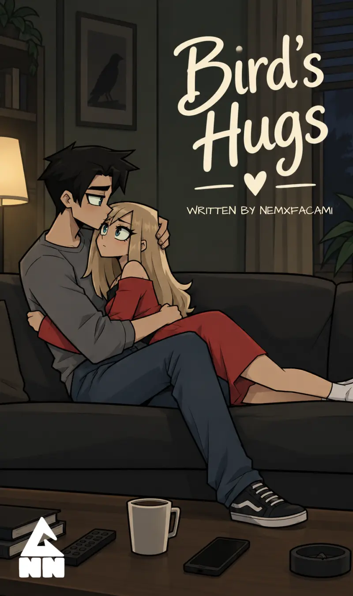

Then she stepped outside and left the house.
Behind her, the door closed.
Eliezer remained inside.
The old movie continued playing on the television.
The sun touched her face.
Maze slowly tilted her head upward, allowing the warmth to rest against her skin.
She loved the sun.
There was something about its heat that made her want to stop everything and simply lie down somewhere, letting it cover her body until she forgot about the rest of the world.
The warmth felt almost like a hug.
A quiet one.
The kind that asked nothing from her.
For a moment, she imagined spending the entire day somewhere outside, lying beneath the sun while it slowly burned against her skin. She could already feel the warmth spreading across her face and arms.
But she kept walking.
EddiesMadisons Street wasn't too far away.
Her shoes pressed against the pavement with each step, one after another, while the morning moved around her.
Cars passed along the road.
Some moved slowly, their engines humming as they went by.
Others rushed past her, tires rolling loudly against the road before the sound gradually disappeared behind her.
A breeze followed one of the faster cars, brushing against her clothes and then disappearing just as quickly.
Maze continued walking.
The city seemed different from inside the house.
Outside, there was movement everywhere.
Cars.
People.
Voices.
Engines.
Footsteps.
And above all of it, the sun continued warming her face.
She kept walking toward EddiesMadisons Street.
Maze was walking among the group of people moving along the street when she heard her name.
"Maze."
She stopped.
For a moment, she wasn't sure if she had actually heard it.
People continued walking around her, some passing close enough that their shoulders nearly brushed against hers. The sounds of the street continued without interruption—cars moving along the road, people talking to one another, shoes scraping against the pavement.
Maze turned her head.
She looked behind her.
Nothing.
No one she recognized.
She turned back toward the people ahead of her, scanning their faces.
Then she heard it again.
"Maze."
This time, she knew it was her.
Her eyes moved across the street.
There, sitting on a bench outside Erstlingfield's Park, was Bruce.
He had one hand raised, waving at her so she could see him.
Maze stared at him for a second.
Then she raised her own hand and waved back.
She crossed the street.
Eliezer followed behind her.
"Oh, it's the lover boy, Maze. He seems alright," he said.
Maze couldn't hear him.
As she crossed, cars continued passing along the road.
One moved close enough to Eliezer that its body seemed to pass directly through him.
He looked down at the car as it went through his body.
"You know, at times I forget these cars can't hit me. I can even see the engine when it passes through me."
He stood in the middle of the street, watching another vehicle pass straight through him.
Maze had already reached the other side.
She walked toward the bench and sat beside Bruce.
Bruce smiled at her.
For a moment, neither of them said anything.
The sounds of the street filled the silence between them.
Maze looked at him.
Bruce looked back.
She shifted slightly on the bench.
"So, where are you going?" Bruce asked.
"I was going to Nadia, but I think it's great we met."
Bruce's expression softened.
"Oh. Why?"
Maze hesitated.
The question hung between them.
She looked down for a moment before speaking.
"'Cause I'm really sorry about what happened last week. Yesterday... I—"
"Oh, it's okay," Bruce interrupted.
His voice wasn't angry.
"We just had different views of the situation."
Maze looked at him.
"Right?"
She slowly wrapped her hands around her waist.
Her fingers pressed lightly against her sides as she looked toward the street for a brief moment.
"That's what I think too."
Another quiet moment passed.
The traffic continued moving in front of them.
Maze finally looked back at Bruce.
"What made you think we were a couple?"
Bruce shifted slightly on the bench.
"Do you remember when I asked you if you wanted to go eat out?"
"Yeah, I do."
Maze smiled faintly.
"It was a wonderful time to spend with you."
Bruce looked at her.
"To me, it seemed like a date."
He paused.
His eyes remained on hers.
"A date I'd forever cherish with you."
Maze looked at him.
For a moment, she didn't say anything.


.png)